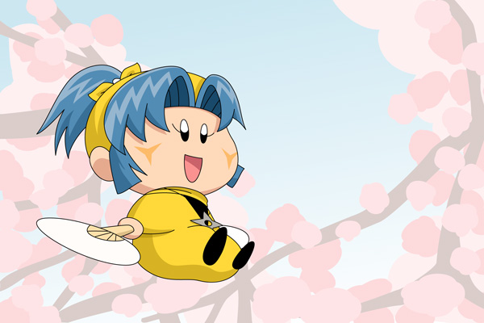

ヤマネ「ヤシチあにさま！ とっても美しい桜でございますね」
東京もいよいよ桜の季節がやってきました！
ということで、桜をテーマに妖精を描いてみました。桜にもっとも似合う妖精といったら、私はヤマネを選びますね（着物やら夏祭りなどでも同じことを言っているような気もしますが^^;）。
妖精界に桜があるのかどうかは調べてみないとわかりませんが、ヤマネなら桜の美しさに目を輝かせそうです。ヤマネに対して、ヤシチやサスケ、ハンゾーは花より団子で、「桜なんかより、あっちで売ってる桜饅頭を買いに行こうだぜ！」とか言うのでしょーか。
今回は人間目線を意識して下から見上げた構図で描いてみましたが、慣れない構図は難しいです。絵の完成度は構図で決まるとよく言われますので、そろそろ本格的にパースを勉強して、いろんな構図を描けるようになりたい・・・。
(2014/3/30)